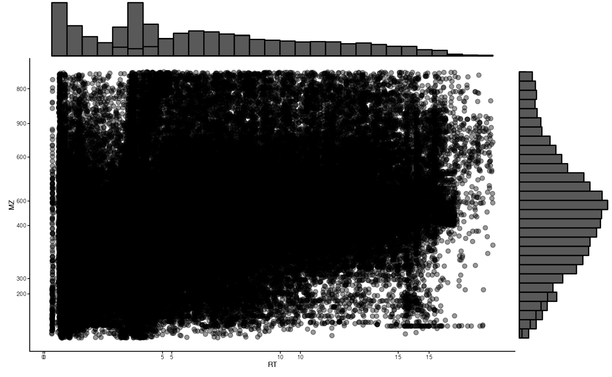
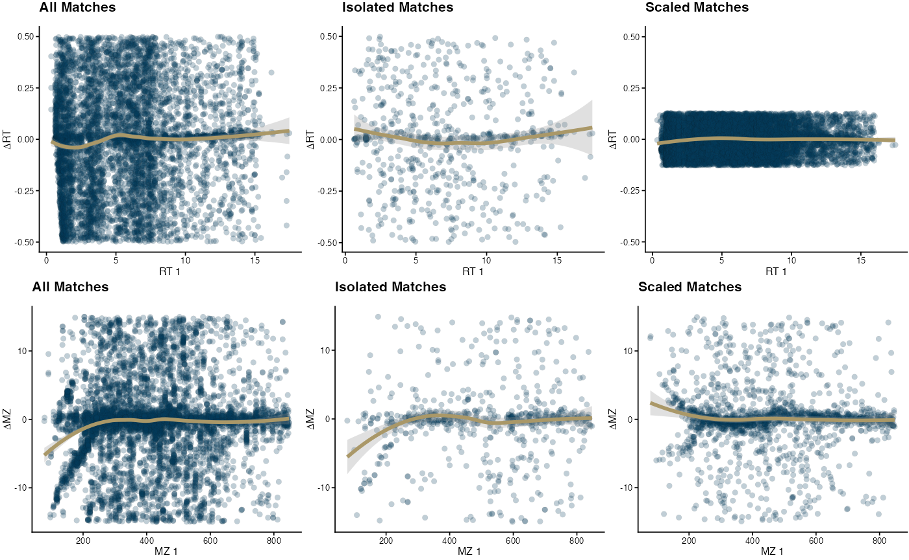
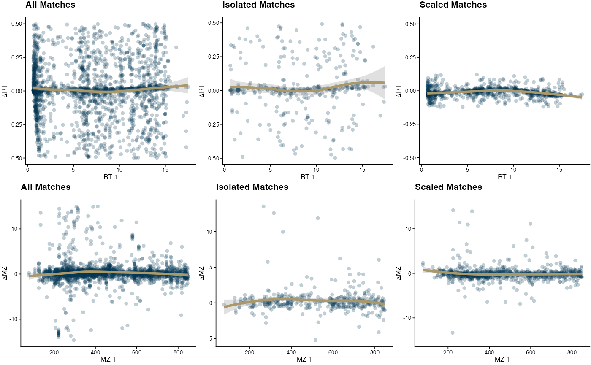

Alignment Tutorial using iHMP Data
Chiraag Gohel, chiraaggohel@gwu.edu
Bahar Sayoldin, bahar.sayoldin@gmail.com
Ali Rahnavard, rahnavard@gwu.edu
Compiled: June 18, 2023
Source:vignettes/iHMP_software_comp.Rmd
iHMP_software_comp.RmdSetup
For this tutorial, we will be analyzing two datasets from the NIH human microbiome project that were processed using different techniques. The first dataset can be downloaded here. The second dataset can be downloaded here.
First, massSight can be installed via
devtools:
install.packages('devtools')
devtools::install_github("omicsEye/massSight", force = TRUE)We’ll also need to install the package omicsArt. This
package provides helper functions for loading, wrangling, and
visualizing data. Instructions for installing omicsArt can
be found here.
We can then load the necessary libraries.
Loading iHMP data
We can use the load_data() function to import LC-MS data
in excel format from a variety of standard pre-processed formats.
loaded_data <-
massSight::load_data(
input = 'data/HMP2_metabolomics.xlsx',
type = 'all',
sheet = 1,
id = 'Compound_ID'
)
loaded_data$feature_metadata$MZ <-
as.numeric(loaded_data$feature_metadata$MZ)
loaded_data$feature_metadata$RT <-
as.numeric(loaded_data$feature_metadata$RT)
feature_metadata2 <-
loaded_data$feature_metadata[colnames(loaded_data$data), ]We can then use the filter_intensities() function to
perform quality control and remove metabolites with low prevalence.
loaded_data$data <- loaded_data$data |> t() |> data.frame()
hmp2_keep <-
filter_intensities(data = loaded_data$data, prevalence = .5)
loaded_data$data <- loaded_data$data[hmp2_keep,]
feature_metadata2 <- feature_metadata2[hmp2_keep,]
feature_metadata2$Intensity <- rowMeans(loaded_data$data, na.rm = T)
ref_input <-
feature_metadata2[(!is.na(feature_metadata2$MZ)) &
(!is.na(feature_metadata2$RT)),]Create a massSight object for the first dataset
We now have everything we need to create a massSight
object (MSObject). The object serves as a container that
contains raw data, analyzed data, and other information regarding the
experiment. For more information about the MSObject, check
out its documentation.
hmp2_ms <- create_ms_obj(
df = ref_input,
name = "iHMP",
id_name = "Compound_ID",
rt_name = "RT",
mz_name = "MZ",
int_name = "Intensity",
metab_name = "Metabolite"
)We can use the raw_df() function to access the stored
data from the created object. Let’s see what it looks like!
| Compound_ID | Metabolite | RT | MZ | Intensity | |
|---|---|---|---|---|---|
| C18n_TF6 | C18n_TF6 | C18-neg_2-hydroxyibuprofen_C18n_TF6 | 5.83 | 221.1183 | 3935485.79 |
| C18n_QI90 | C18n_QI90 | C18-neg_acesulfame_C18n_QI90 | 0.94 | 161.9856 | 604711.27 |
| HILn_QI21 | HILn_QI21 | HILIC-neg_acesulfame_HILn_QI21 | 3.21 | 161.9868 | 1281511.77 |
| HILp_TF21 | HILp_TF21 | HILIC-pos_alpha-hydroxymetoprolol_HILp_TF21 | 6.77 | 284.1861 | 3541139.07 |
| HILp_QI10262 | HILp_QI10262 | HILIC-pos_C12:1 carnitine_HILp_QI10262 | 6.98 | 342.2646 | 805882.89 |
| C8p_QI17 | C8p_QI17 | C8-pos_C20:4 LPE_C8p_QI17 | 4.70 | 502.2933 | 35184.74 |
We process the second dataset similarly.
C18_CD <- read.delim(
'data/iHMP_C18-FFA_CompoundDixcoverer_Exported_All_Samples_Annotated.csv',
sep = ',',
header = TRUE,
fill = FALSE,
comment.char = "" ,
check.names = FALSE
#row.names = 1
)We then check the column names to see what variable names should be
used when converting the dataframe into a massSight
object.
colnames(C18_CD) |> head(10)
#> [1] "Name"
#> [2] "Annot. Source: MassList Search"
#> [3] "Calc. MW"
#> [4] "m/z"
#> [5] "RT [min]"
#> [6] "Area (Max.)"
#> [7] "Area: 0000h_XAV_iHMP2_FFA_PREFA01.raw (F1)"
#> [8] "Area: 0000i_XAV_iHMP2_FFA_PREFB01.raw (F2)"
#> [9] "Area: 0001_XAV_iHMP2_FFA_SM-6JWO4.raw (F3)"
#> [10] "Area: 0002_XAV_iHMP2_FFA_SM-7CRWL.raw (F4)"In this dataset, sample intensity values begin at column 7 until the
end of the dataframe. The load_data() function used
omicsArt::numeric_dataframe() to ensure that we converted
the dataframe columns as numeric as the read dataframe has columns with
various data types and to measure mean of rows of intensities we need to
convert them to numeric.
c18_keep <- filter_intensities(data = C18_CD[, 7:ncol(C18_CD)],
prevalence = .5)
C18_CD_filter <- C18_CD[c18_keep, ]
C18_CD$Intensity <-
rowMeans(omicsArt::numeric_dataframe(C18_CD[, 7:dim(C18_CD)[2]]),
na.rm = T)
C18_CD$row_id <- rownames(C18_CD)We then can create an object for C18_CD which includes FFA metabolites processed with Compound Discovery version
ms_C18_CD <-
create_ms_obj(
df = C18_CD,
name = "C18_CD",
id_name = "row_id",
rt_name = "RT [min]",
mz_name = "m/z",
int_name = "Intensity",
metab_name= "Name"
)Quick QC Check
We can visualize the distributions of retention time and mass to
charge ratio using distribution_plot()
distribution_plot(hmp2_ms)
distribution_plot(ms_C18_CD)
Combining Datasets
The auto_combine() function allows users to combine two
datasets via the modeling of RT and m/z drift between the two
experiments. For more information on the function, check out its documentation!
aligned <- auto_combine(
ms1 = hmp2_ms,
ms2 = ms_C18_CD,
iso_method = "dbscan",
eps = .15,
smooth_method = "loess"
)
#> Numbers of matched/kept features: 9189Visualization
Visualization of alignment can be performed via the
final_plots() function.
final_plots(aligned)
#> `geom_smooth()` using formula = 'y ~ x'
#> `geom_smooth()` using formula = 'y ~ x'
#> `geom_smooth()` using formula = 'y ~ x'
#> `geom_smooth()` using formula = 'y ~ x'
#> `geom_smooth()` using formula = 'y ~ x'
#> `geom_smooth()` using formula = 'y ~ x'
#> Warning: Removed 7481 rows containing non-finite values
#> (`stat_smooth()`).
#> Warning: Removed 7481 rows containing missing values (`geom_point()`).
We recommend the use of ggsave() from the package
ggplot2 for the saving of publication quality figures.
## Visualization
final_smooth <- final_plots(aligned)
ggsave(
filename = 'manuscript/figures/fig_iHMP_software_comp/final_smooth_ref_all.png',
plot = final_smooth,
width = 7.2,
height = 3.5,
units = "in",
dpi = 300
)Using only C18-neg as a reference
ref_input_C18 <- ref_input[ref_input$Method == "C18-neg", ]
ref_C18 <- create_ms_obj(
df = ref_input_C18,
name = "iHMP_C18",
id_name = "Compound_ID",
rt_name = "RT",
mz_name = "MZ",
int_name = "Intensity",
metab_name = "Metabolite"
)Run auto_combine with dbscan
aligned_c18 <- auto_combine(
ms1 = ref_C18,
ms2 = ms_C18_CD,
iso_method = "dbscan",
eps = .15,
smooth_method = "loess"
)
#> Numbers of matched/kept features: 1001Visualization
final_plots(aligned_c18)
#> `geom_smooth()` using formula = 'y ~ x'
#> `geom_smooth()` using formula = 'y ~ x'
#> `geom_smooth()` using formula = 'y ~ x'
#> `geom_smooth()` using formula = 'y ~ x'
#> `geom_smooth()` using formula = 'y ~ x'
#> `geom_smooth()` using formula = 'y ~ x'
#> Warning: Removed 70 rows containing non-finite values (`stat_smooth()`).
#> Warning: Removed 70 rows containing missing values (`geom_point()`).
final_smooth_ref_C18 <- final_plots(aligned_c18)
ggsave(
filename = 'manuscript/figures/fig_iHMP_software_comp/final_smooth_ref_C18.png',
plot = final_smooth_ref_C18,
width = 7.2,
height = 3.5,
units = "in",
dpi = 300
)